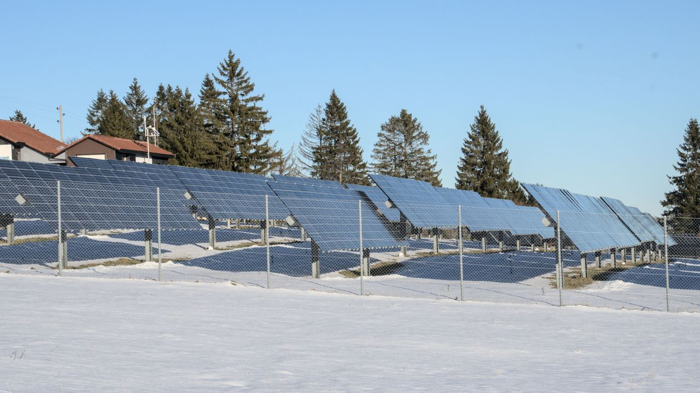

Solar panels run on light, not heat — so they keep generating whenever there's daylight, cloud or shine, summer or winter. What changes is how much energy they make. Two questions come up again and again: what about cloudy days, and what about winter? They have very different answers.
Cloudy and rainy days
Panels don't only use direct sunlight — they also convert diffuse light, the scattered daylight that still reaches the ground under cloud. So on an overcast day they keep producing, just less. As a rough guide, light cloud might drop output to around 50–70% of a clear day, and heavy, dark overcast to roughly 10–25%. Rain itself doesn't stop production, and it has a small bonus: it rinses dust off the panels, which helps output once the sky clears.
Winter: two forces pulling opposite ways
Winter is where it gets interesting, because two effects fight each other:
Cold helps. Panels are rated at 25°C and actually get more efficient as they cool — they lose a little voltage and power when hot, so a crisp winter day can give very strong instantaneous output. This surprises people who assume "less heat = less solar."
But the days are short. The sun rises later, sets earlier, and stays low in the sky, so there are far fewer peak sun hours. That shortfall outweighs the cold-weather bonus, so winter still produces less total energy than summer overall — often much less at high latitudes.
What about snow?
A thick layer of snow blocks the light and pauses production until it clears. But panels are dark and usually tilted, so they warm in the sun and a light covering tends to slide off on its own. Once clear, snow on the ground can even bounce extra light onto the array. A good winter tilt angle — steeper than in summer — both catches the low sun better and helps snow shed.
From the field
On overcast, rainy days the output drops noticeably — the clouds block a lot of the light — but it never stops; the panels keep producing from the diffuse light that gets through. Cold works the other way: lower temperatures actually raise a panel's efficiency. The catch in winter is the short day — fewer hours of sun and a low sun angle — so overall production still ends up lower.
What it means for your system
If you're grid-tied, it barely matters day to day — the grid covers the gaps and your production averages out over the year. If you're off-grid, you must design for your worst season: size the array and battery around winter's short days, not summer's long ones. Estimate the seasonal difference with the energy production calculator and your local peak sun hours.
Related tools
Plan around the weather with the energy production calculator, set the best tilt angle for winter, see how heat cuts output with the temperature derating calculator, and read up on peak sun hours by location.
Frequently asked questions
Do solar panels work on cloudy days?
Yes — they use diffuse light and never fully stop in daylight. Light cloud cuts output to ~50–70% of a clear day; heavy overcast to ~10–25%. Less energy, not zero.
Do solar panels work in winter?
Yes. The cold actually helps efficiency, but short days and a low sun angle mean fewer peak sun hours, so total winter energy is lower.
Does cold weather affect solar panels?
Cold improves efficiency — panels lose power when hot, so a cold bright day gives strong output. Winter's limit is daylight, not temperature.
Do solar panels work with snow on them?
Heavy snow blocks light until it clears, but a light dusting slides off tilted, dark panels quickly. Ground snow can reflect extra light onto clear panels.